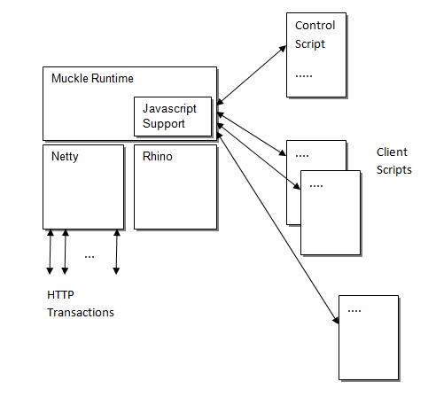

The standard Javascript runtime provided by Mozilla Rhino is augmented by Muckle with specific functions and objects to make the creation of the client and control scripts and the running of them as efficient as possible whilst providing the flexibility of using the ubiquitous Javascript scripting language in their definition. The control script objects and functions are used to configure the Muckle test runtime in readiness for running an HTTP load test. Once configured and running the Muckle test runtime uses the Netty event driven framework to do the heavy lifting associated with HTTP transactions, calling the Muckle client scripts to do the test specific management of the transaction content. The overview diagram below shows a block level view of the Muckle architecture.

Prior to running the load test Muckle creates many instances of the client script defined by the control script. Each of these client script (HTTP sessions) instances runs in its own Javascript context independent of other sessions and the main control script. In this way each HTTP session of a load test has its own session state allowing Muckle to be used to load test complex state driven web applications. Although the simple and efficient control of HTTP transaction execution state is the primary motive for the Muckle runtime architecture it is equally efficient to use Muckle to create HTTP load tests which do not need previous state for their execution such as repeated HTTP GETs of a particular resource.
Example - load and execute the "myJavascriptModule.js" from the parent directory of the currently executing Javascript module.
require("myJavascriptModule.js");
Example - The good old "hello world" example.
println("hello world");
Example - The good old "hello world" example (with no new line).
print("hello world");
Returns all the contents of a text file as a string. The content encoding defaults to "UTF-8" unless an encoding parameter is also supplied.
This function will throw a runtime exception if the file cannot be found, or the encoding is unknown. The file search path is firstly the current script source directory, followed by a test to see if the filename is absolute, followed by the Muckle home directory.
Example - read a file whose location is the same directory as the currently executing script source
var contents = readFile('test.txt');
Example - read a file whose contents have been created using "utf-16" encoding.
var contents = readFile('test.txt', 'utf-16');
Example - read and parse a json file stored in a 'data' directory at the same directory level as the current script directory
var json = JSON.parse(readFile('../data/params.json'));
Writes the "contents" string to a file named "filename", optionally encoding the contents using the supplied encoding mechanism name. The "filename" parameter is considered relative to the "muckle" installation directory if it does not begin with a slash, or a drive letter followed by a slash for windows.
Returns the number of bytes written to the file.
Example - write to the relatively pathed file "test.txt" a literal string using UTF-8 encoding.
var count = writeFile('test.txt', 'some content');
Example - write to the absolutely pathed file "/tmp/test.txt" a literal string using UTF-16 encoding.
var count = writeFile('/tmp/test.txt', 'some content', 'UTF-16');
| Method | Description |
|---|---|
| parse(jsonString) |
Parses a json string and converts it into a Javascript object.
Example - turn the body of an HTTP response into a Javascript object or array depending on the body content.
function httpResonseHandler(resp){
if(resp.status == 200){
var bodyObject = JSON.parse(resp.getContent());
..
..
|
| stringify(object) |
Converts a Javascipt object into a json string.
Example - create the JSON string representation of a Javascript object.
var obj = {x:1, y:true};
var jsonString = JSON.stringify(obj);
|
Example - print the name of the currently executing script
println(args[0]);
SessionRunner(host [, port[, secure]]);
| Property | Description |
|---|---|
| errors |
An array of Javascript objects that lists any errors that occurred during a run.
This will be empty if no errors occurred. This property is cleared at at the beginning of
processing the "run" method and set at the end of it.
As there are potentially many sessions active during a run to increase brevity the error property provides one entry for each unique error that occurred. Each object in the array consists of two properties, a "message" property detailing each unique message and a "count" property providing the count of the message occurances. Example - printing out the error property as a JSON string.
var runner = new SessionRunner("localhost", 8080);
runner.run(....)
...
println(JSON.stringify(runner.errors));
...
Will produce something like the string -
[{"message":"Http session aborted on error. Connect","count":315}]
indicating in this instance that 315 sessions failed to complete due to being unable to connect.
|
| Method | Description |
|---|---|
| setProxy( host [,port]) |
Sets the parameters for an HTTP proxy to be used for any run method calls for a session object. Default value for
port is 80.
Example - Configure a session to make all http requests via a proxy running on the host "localhost" on port 8888.
var runner = new SessionRunner("localhost", 8080);
runner.setProxy("localhost", 8888)
|
| run( count, startRate, clientScript [,parameters, [common]]) |
Starts an http load test run with "count" sessions, starting "startRate" connections per second, using the script defined by "clientScript" for each session.
It returns the number of successful client sessions.
Example - start 1000 sessions, at 50 connections per second using the client script "get_index.js" to control the sessions.
var runner = new SessionRunner("localhost", 8080);
var completedCount = runner.run(1000, 50, "get_index.js")
The optional parameter "parameters" is an array of individual parameter objects to be passed to a client session in the "parameters" property
of the "session" object.
Each session will be passed one of the elements from the array therefore the number of elements in the parameters array must be
greater than or equal to the count parameter passed to the run method. The individual elements will be serialised into
a JSON string before being passed to a client session.
Example - start 2 sessions with parameters.
...
var params = [{user:'user1', password:'p4551'}, {user:'user2', password:'p4552'}];
runner.run(2, 50, "get_index.js", params)
The optional parameter "common" is an object that will be copied to each client session.
Example - start 2 sessions each of which will have access to "some_common_value".
...
runner.run(2, 50, "get_index.js", null, {some_common_value:22})
|
| getSummaryProvider() |
Returns a "summary provider" object that will allow access to a summary of the results after the "run" method has been called.
The results are available in the "summary" property of the object returned from this call.
Example - print a summary of a run -
var runner = new SessionRunner("localhost", 8080);
var sp = runner.getSummaryProvider();
runner.run(1000, 50, "get_index.js")
println(JSON.stringify(sp.summary));
will print something like -
{"sessionCount":1000,
"duration":{"min":20551,"max":22050,"average":21146.912},
"step":{"min":0,"max":780,"average":64.92965000000008},
"connect":{"min":0,"max":562,"average":59.965}}
The "summary" property object provides four summarised details.
1. The "sessionCount" property. This is a count of the number of successfully completed client script executions, ( this is also the number of result sets used to calculate the other three properties). 2. The "duration" property. This object contains min, max and average millisecond values for the duration of over all of the client script executions. 3. The "step" property. This object contains min, max and average millisecond values for the time taken to receive a response to a request over all the steps over all of the client script executions. 4. The "connect" property. This object contains min, max and average millisecond values for the connection times over all of the client script executions.
|
| getDataEventProvider() |
Returns a "data event provider" object that allows access to the response times and data length for each step of each client session after the "run" method has been called.
The "provider" object has a "values" property which is an array of arrays.
There is one outer array element for each successful client session execution. Each "session" element contains an array of "DataEvent" objects, one per execution step. The "start" and "end" properties of a DataEvent object constructed by the provider hava a time unit of nanoseconds, the length is the number of bytes in the content portion of the HTTP message. Example - Print all data transfer events -
var runner = new SessionRunner("localhost", 8080);
var dp = runner.getDataEventProvider();
runner.run(1, 50, "get_index.js")
println(JSON.stringify(dp.values));
will print something like -
[[{"start":1380535574894,"end":1380535575003,"contentLength":10000},
{"start":1380535576017,"end":1380535576017,"contentLength":10000} ....
{"start":1380535594274,"end":1380535594274,"contentLength":10000}]]
The start and end property values bear no relation to absolute time the only guarrantee is that end will be greater than or equal to start. To obtain an absolute time from a data event start or end time the "data event provider" object provides a "timeResolver" property that is a reference to a "TimeResolver" object that has methods to resolve a data event nanosecond timestamp to a measure of the munber of milliseconds from midnight, January 1, 1970 UTC. |
| setStatusListener( period, callback) |
Sets a function "callback" that will be called every "period" seconds with a "status" object summarising the execution status
of all the client scripts during the execution of the "run" method.
Example - Print out the status every four seconds -
var runner = new SessionRunner("localhost", 8080);
runner.setStatusListener(4, function(status){println(JSON.stringify(status));});
runner.run(1000, 50, "get_index.js")
will produce something like -
{"started":201,"finished":0,"errors":0,"elapsed":4026,"min":0,"max":3}
{"started":402,"finished":0,"errors":0,"elapsed":8054,"min":0,"max":7}
{"started":603,"finished":0,"errors":0,"elapsed":12068,"min":0,"max":11}
{"started":803,"finished":0,"errors":0,"elapsed":16081,"min":0,"max":15}
{"started":1000,"finished":0,"errors":0,"elapsed":20093,"min":0,"max":19}
{"started":1000,"finished":177,"errors":0,"elapsed":24121,"min":3,"max":20}
{"started":1000,"finished":375,"errors":0,"elapsed":28132,"min":7,"max":20}
{"started":1000,"finished":576,"errors":0,"elapsed":32142,"min":11,"max":20}
{"started":1000,"finished":769,"errors":0,"elapsed":36153,"min":15,"max":20}
{"started":1000,"finished":978,"errors":0,"elapsed":40167,"min":19,"max":20}
The "status" object supplied to the callback function has six properties.
1. The "started" property. This is a count of the number of client scripts that have been started. 2. The "finished" property. This is a count of the number of client scripts that have finished. 3. The "errors" property. This is a count of the number of client scripts that have had soem form of error. 4. The "elapsed" property. This is the number of milliseconds that have elapsed since the "run" method started executing client scripts. 5. The "min" property. This is the minimum execution step of all non erroring scripts. 6. The "max" property. This is the maximum execution step of all non erroring scripts. NOTE - if the callback method returns a boolean false then the execution of all client scripts will be aborted. Example - Abort if all client script execution is not completed in 100 seconds -
var runner = new SessionRunner("localhost", 8080);
runner.setStatusListener(4, function(status){ return status.elapsed < 100000;});
runner.run(1000, 50, "get_index.js")
|
| setConnectionTimeout(milliseconds) |
Sets the time period in "milliseconds" that a client session will wait for the host to respond to a connection request.
This method always returns the current timeout.
Example - Print out default timeout and set the connection timeout to be 5 seconds;
var runner = new SessionRunner("localhost", 8080);
println(runner.setConnectionTimeout());
println(runner.setConnectionTimeout(5000));
..
|
DataEvent(start, end [, length]);
| Property | Description |
|---|---|
| start | This is the value of the "start" parameter supplied in the constructor. |
| end | This is the value of the "end" parameter supplied in the constructor. |
| contentLength | This is the value of the "length" parameter supplied in the constructor, or zero if not supplied. |
| Method | Description |
|---|---|
| elapsed | Returns the difference between the "end" and "start" properties. |
TimeResolver(startTimestamp, nanoTimestamp);
| Property | Description |
|---|---|
| startTimestamp | This is the value of the "nanoTimestamp" parameter supplied in the constructor. |
| nanoTimestamp | This is the value of the "nanoTimestamp" parameter supplied in the constructor. |
| Method | Description |
|---|---|
| getMillisFor | Returns a millisecond time that can be used to create a Javascript Date object to obtain absolute time units. |
| Property | Description |
|---|---|
| onNextRequest |
References the function that will be called when the runtime needs a new request object.
The function should return an instance of an "HttpRequest" object or null if
there are no more HTTP requests to be processed.
If not defined or null then the runtime will log an error and halt processing. Example - read the "index.html" page 1000 times with no delay between requests.
var req = new HttpRequest("/index.html");
var count = 1000;
session.onNextRequest = requestHandler;
function requestHandler(){
count--;
return count >= 0 ? req : null;
}
|
| onHandleResponse |
References the function that will be called when the runtime has a new HTTP response to be processed.
The function will be passed a reference to an "HttpResponse" object that contains the response from the server.
This allows client scripts to process the HTTP response in some way.
This property is optional and has no effect on the runtime if not defined. |
| onHandleError |
References the function that will be called when the runtime hits some form of communication error when
attempting an HTTP transaction.
The function will be passed a reference to an "HttpError" object and should return an one of the
static properties of the "HttpErrorAction" object.
This allows client scripts to control the action the runtime will take on a communications error.
This property is optional. If not defined the runtime will abort the client session. |
| parameters | Holds any parameter value(s) supplied by the control script when it creates a client session. This can be used to receive session specific data such as user name and password. This is a read only property. |
| common | Holds the common value supplied by the control script when it creates all client sessions. This is a read only property. |
| Method | Description |
|---|---|
| calcDelay(requiredTimeFromStart) |
Returns the difference in milliseconds between the elapsed time for this session and the "requiredTimeFromStart". Use this to calculate
the value for the "delay" property of a request.
Example - to make a request every second.
var count = 0;
var max = 1000;
var req = new HttpRequest("/index.html");
session.onNextRequest = requestHandler;
function requestHandler(){
req.delay = session.calcDelay(count * 1000);
count++;
return count <= max ? req : null;
}
|
NOTE - the runtime behaviour is undefined if the "session" object is redefined.
An HttpRequest object may be constructed at any time by a Muckle client script. Objects of this type are required to be returned by the Javascript "onNextRequest" function defined in the "session" object property.
HttpRequest([uri, [method]]);
The default for the uri is "/" and for the method is "GET".
| Property | Description |
|---|---|
| uri |
Sets and gets the uri for the http request.
Example - update uri request parameter value.
var req = new HttpRequest();
var count = 1000;
session.onNextRequest = requestHandler;
function requestHandler(){
req.uri = "/index.html?count=" + count;
count--;
return count >= 0 ? req : null;
}
|
| method |
Sets and gets the HTTP method for the http request.
Example - explicitly set the request method.
var req = new HttpRequest("/index.html");
req.method = "HEAD";
...
|
| Method | Description |
|---|---|
| setHeader(name, value) |
Sets the name and value of a header field in the pending HTTP request.
Example - set the "Accept-Language" header, overwriting it if it already exists.
var req = new HttpRequest();
req.setHeader("Accept-Language", "en-US,en;q=0.8");
|
| setContent(content, contentType [,charset]) |
Sets the body contents of the HTTP request to the "content" string supplied, as well as setting the HTTP header "Content-Type" to
the "contentType" string supplied. The optional "charset" string can be used to use an encoding other than the default "UTF-8".
This method will also set the HTTP header "Content-Length" to be the length of the encoded content string.
Example - set the body content using the default encoding
var req = new HttpRequest();
req.setContent('ABC', 'text/plain');
Example - set the body content using a "UTF-16" encoding
var req = new HttpRequest();
req.setContent('ABC', 'text/plain', 'UTF-16');
|
| Property | Description |
|---|---|
| status |
Returns the numerical value of the HTTP response status code.
Example - check if status is "OK"
function httpResonseHandler(resp){
if(resp.status == 200){
...
|
| Method | Description |
|---|---|
| getContent([charset]) |
Returns the contents of the HTTP response body encoded as a string. The optional charset parameter defines the encoding name
that was used to encode the bytes, if not supplied then this defaults to "UTF-8";
Example - get the contents from a response encoded using "utf-16".
function httpResonseHandler(resp){
var bodyString = resp.getContent("utf-16");
...
|
| getContentBytes() |
Returns the contents of the HTTP response body as an array of numbers representing the signed byte values of the octets.
Example - get the body as a numeric array
function httpResonseHandler(resp){
var bodyArray = resp.getContentBytes();
...
|
| getHeader(name) |
Returns the string contents of the HTTP header field that with the name supplied in the parameter, or null if the header is not present.
Example - get the "Content-Type" header contents
function httpResonseHandler(resp){
var headerValue = resp.getHeader("Content-Type");
...
|
| getHeaders() |
Returns all the headers in the HTTP response as an array of javascript objects. Each object has one property, the property "name" is the name of the header field and its "value" is the value of
the header.
Example - get all the headers as an array of objects
function httpResonseHandler(resp){
var headersArray = resp.getHeaders();
...
|
| Function | Description |
|---|---|
| uriEncodeObject(obj) |
Encodes the properties of the "obj" object as name value pairs suitable for inclusion as a query string.
Example - encode an object with two properties.
var query = uriEncodeObject({x:'22', y:999});
would produce the string "x=22&y=999" as the value for the query variable.
|
| uriDecodeString(query) |
Decodes the parameters from a query string and produces an object with appropraite properties.
Example - decode the previous encode example.
var obj = uriDecodeString('x=22&y=999');
would produce an object with two properties x and y with string values '22' and '999'.
|
| Method | Description |
|---|---|
| calcMean(datapoints) |
Returns the mean (average) of a set (array) of datapoints.
Example - calc the mean of the set (2,4,6).
var helper = new StatsHelper();
println(helper.calcMean([2, 4, 6]));
would produce the result 4.
|
| calcMeanAndSigma(datapoints) |
Returns an object that contains an "average" (mean) property and a "sigma" (population standard deviation) property for the
set of datapoints supplied.
Example - calc the mean and standard deviation of the set (2,4,6).
var helper = new StatsHelper();
println(JSON.stringify(helper.calcMeanAndSigma([2,4,6])));
would produce the string {"average":4,"sigma":1.632993161855452}
|
| calcMeanAndSigmaForDataEvents(dataEvents) |
Returns an object that contains an "average" (mean) property and a "sigma" (poulation standard deviation) property
for the elapsed times of the set of dataEvents supplied.
Example - calc the mean and standard deviation of three DataEvents
var helper = new StatsHelper();
var res = helper.calcMeanAndSigmaForDataEvents([new DataEvent(0,20),
new DataEvent(0,40),
new DataEvent(0,60)]);
println(JSON.stringify(res));
would produce the string {"average":40,"sigma":16.32993161855452}
|
| calcMeanAndSigmaForMatrix(matrix) |
Returns an an array that contain mean and sigma object for each column in the matrix of DataEvents.
Such a matrix is obtained from the "value" property of a "data event provider" obtained from a SessionRunner instance. Example - calc the mean and standard deviation for each step of 1000 client sessions of twenty steps.
require('jslibs/statsHelper.js')
var runner = new SessionRunner('localhost', 8080);
var dp = runner.getDataEventProvider();
runner.run(1000, 50, 'index_20.js');
var helper = new StatsHelper();
var stats = helper.calcMeanAndSigmaForMatrix(dp.values);
for(var i=0; i < stats.length; i++){
println(JSON.stringify(stats[i]));
}
would produce something like -
{"average":44.66,"sigma":72.69}
{"average":23.64,"sigma":48.1}
{"average":28.97,"sigma":50.24}
{"average":29.97,"sigma":54.08}
{"average":32.08,"sigma":50.51}
{"average":31.58,"sigma":44.87}
{"average":34.1,"sigma":51.78}
{"average":34.2,"sigma":54.61}
{"average":34.63,"sigma":55.95}
{"average":33.97,"sigma":52.59}
{"average":32.52,"sigma":47.07}
{"average":32.28,"sigma":50.31}
{"average":33.31,"sigma":55.91}
{"average":28.86,"sigma":47.53}
{"average":29.97,"sigma":49.64}
{"average":30.77,"sigma":51.31}
{"average":27.26,"sigma":48.76}
{"average":25.56,"sigma":45.67}
{"average":24.46,"sigma":43.66}
{"average":22.3,"sigma":45.47}
NOTE - the time units for the data events are converted by this method from nanoseconds to milliseconds
for convenience of presentation, as this is the most likely time unit of event durations.
|
| getEarliestDate(dataProvider) |
Returns a Date object for the start of the earliest DataEvent object in the matrix of results or
null if the data set is empty.
Example - print the start time of a session run.
require('jslibs/statsHelper.js')
var runner = new SessionRunner('localhost', 8080);
var dp = runner.getDataEventProvider();
runner.run(1000, 50, 'index_20.js');
var helper = new StatsHelper();
println(helper.getEarliestDate(dp));
would produce something like "Wed Oct 16 2013 10:31:07 GMT+0100 (BST)"
|
| putMatrixInTimeslots(matrix [,millisecondTimeslotSpan]) |
Returns a matrix of DataEvents where the outer array represents the timeslot and the
inner array the DataEvents that ended in that timeslot. If not defined the optional parameter "millisecondTimeslotSpan"
defaults to 1000 milliseconds (ie one second timeslots).
Example - print throughput and response times for each second of a run
require('jslibs/statsHelper.js')
var runner = new SessionRunner('localhost', 8080);
var dp = runner.getDataEventProvider();
runner.run(1000, 50, 'index_20.js');
var helper = new StatsHelper();
var slots = helper.putMatrixInTimeslots(dp.values, 1000);
var throughputs = [];
for(var i=0; i<slots.length; i++){
var throughput = 0;
var responseTimes = [];
var slotEntries = slots[i];
for(var si=0; si<slotEntries.length; si++){
throughput += slotEntries[si].contentLength;
responseTimes.push(slotEntries[si].end-slotEntries[si].start);
}
throughputs.push({
throughput: throughput,
responseTime: helper.convertMeanSigmaToMillis(helper.calcMeanAndSigma(responseTimes))
});
}
for(var i=0; i<throughputs.length; i++){
println(JSON.stringify(throughputs[i]));
}
would produce something like
{"throughput":658359,"responseTime":{"average":19.74,"sigma":18.01}}
{"throughput":1329627,"responseTime":{"average":9.87,"sigma":7.04}}
{"throughput":1987986,"responseTime":{"average":7.37,"sigma":6.07}}
{"throughput":2633436,"responseTime":{"average":7.28,"sigma":5.54}}
{"throughput":3188523,"responseTime":{"average":6.71,"sigma":5.3}}
{"throughput":3885609,"responseTime":{"average":7.52,"sigma":4.49}}
{"throughput":4582695,"responseTime":{"average":11.65,"sigma":11.72}}
{"throughput":5047419,"responseTime":{"average":8.13,"sigma":6.12}}
{"throughput":5783232,"responseTime":{"average":7.74,"sigma":5.02}}
{"throughput":6118866,"responseTime":{"average":10.41,"sigma":8.11}}
{"throughput":6945042,"responseTime":{"average":25.05,"sigma":36.98}}
{"throughput":7616310,"responseTime":{"average":12.06,"sigma":8.28}}
{"throughput":8300487,"responseTime":{"average":27.74,"sigma":34.16}}
{"throughput":8933028,"responseTime":{"average":20.46,"sigma":20.75}}
{"throughput":9294480,"responseTime":{"average":14.57,"sigma":12.17}}
{"throughput":9823749,"responseTime":{"average":25.69,"sigma":28.74}}
{"throughput":10791924,"responseTime":{"average":30.28,"sigma":23.69}}
{"throughput":10146474,"responseTime":{"average":61.39,"sigma":65.02}}
{"throughput":11114649,"responseTime":{"average":47.96,"sigma":38.71}}
{"throughput":9939930,"responseTime":{"average":57.39,"sigma":40.75}}
{"throughput":12353913,"responseTime":{"average":158.37,"sigma":142.39}}
{"throughput":11850462,"responseTime":{"average":41.23,"sigma":34.48}}
{"throughput":11450283,"responseTime":{"average":78.19,"sigma":75.61}}
{"throughput":10701561,"responseTime":{"average":21.02,"sigma":17.19}}
{"throughput":7771218,"responseTime":{"average":18.79,"sigma":37.89}}
{"throughput":9320298,"responseTime":{"average":38.37,"sigma":41.99}}
{"throughput":9023391,"responseTime":{"average":13.73,"sigma":10.33}}
{"throughput":8171397,"responseTime":{"average":11.41,"sigma":14.91}}
{"throughput":7538856,"responseTime":{"average":7.38,"sigma":4.38}}
{"throughput":7138677,"responseTime":{"average":9.17,"sigma":6.27}}
{"throughput":6480318,"responseTime":{"average":6.7,"sigma":4.08}}
{"throughput":5821959,"responseTime":{"average":7.4,"sigma":7.85}}
{"throughput":5111964,"responseTime":{"average":7.22,"sigma":16.78}}
{"throughput":4453605,"responseTime":{"average":5.8,"sigma":3.01}}
{"throughput":3769428,"responseTime":{"average":4.36,"sigma":3.26}}
{"throughput":3162705,"responseTime":{"average":3.27,"sigma":1.52}}
{"throughput":2491437,"responseTime":{"average":2.79,"sigma":1.32}}
{"throughput":1794351,"responseTime":{"average":3.02,"sigma":1.29}}
{"throughput":1161810,"responseTime":{"average":1.81,"sigma":0.97}}
{"throughput":477633,"responseTime":{"average":2,"sigma":0.74}}
{"throughput":12909,"responseTime":{"average":1.58,"sigma":0}}
|
"munitRunner" uses the munit.js library which provides a simple framework for unit test definition and execution. This framework allows the construction of tests suites by utilising appropriate functions from the set listed below.
| Function | Description |
|---|---|
| suite(description, suiteFunction) | A call to this function defines a suiteFunction that defines a suite of tests to be run. |
| test(description, testFunction) | A call to this function defines an individual testFunction to be run. |
| before(beforeFunction) | A call to this function defines a beforeFunction to be called before each test is executed. |
| after(afterFunction) | A call to this function defines a afterFunction to be called after each test is executed. |
| assertEquals(expected, actual [,msg]) | A call to this function checks that actual === expected. The optional parameter msg can be used to uniquely identify the assertion. |
| assertDefined(item [,msg]) | A call to this function checks that item !== undefined. The optional parameter msg can be used to uniquely identify the assertion. |
| fail(msg) | A call to this function fails a test outputing the supplied msg. |
As an example of the usage of these functions consider developing an object ExampleObject that has two methods - "add" and "getLastResult".
We would typically create two files the source of the object to be tested, and the other the source of the set of tests that ensure the object is complete and functional.
The incomplete set of tests is contained within jslibs/test/exampleObjectTest.js -,
require("exampleObject.js"); // include the object under test
// declare a suite of tests
suite("An exampleObject can", function(){
// declare a scoped variable for instances of ExampleObject
var ex;
// set the function to be called before execution of each test
before(function(){
// construct a new instance of ExampleObject before each test
ex = new ExampleObject();
})
// define an "add" test
test("add two numbers", function(){
// assert that the result is as expected
assertEquals(4, ex.add(2, 2));
});
// define a "getLastResult" test
test("remember the last result", function(){
// add and check result is remembered
ex.add(2, 2);
assertEquals(4, ex.getLastResult());
});
});
and the implementation of ExampleObject is within jslibs/test/exampleObject.js -.
function ExampleObject(){
this.lastResult = undefined;
}
ExampleObject.prototype = {
add: function(a, b){
this.lastResult = a + b;
return this.getLastResult();
},
getLastResult: function(){
return this.lastResult;
}
};
Example - running the objectExampleTest from command line using munitRunner.
C:\PATH_TO_MUCKLE>muckle jslibs\munitRunner.js jslibs\test\exampleObjectTest.js An exampleObject can add two numbers remember the last result Tests run:2, Failures: 0, Errors: 0
Example - output from munitRunner when a suite has failures.
C:\PATH_TO_MUCKLE>muckle jslibs\munitRunner.js jslibs\test\exampleObjectTest.js
An exampleObject can
add two numbers
Failed : expected <4> actual <5>
remember the last result
Failed : expected <4> actual <5>
Tests run:2, Failures: 2, Errors: 0
See jslibs/test directory for further examples of usage.
java -Xms32m -Xmx1512m -cp libs/* org.sh.muckle.runtime.js.Bootstrap %*As a starting point allow 100K per muckle session.
When Muckle starts up it looks for Java jar files in the "libs" directory that have a manifest entry with a "services" section entries that define a class that implements iether one or both of the Java interfaces "IControlScriptObjectService" and "IClientScriptObjectService" . So to add a new feature all that needs to be done is create a jar file with teh appropriate manifest configuratuion and class files that implement the interfaces then drop it in the "libs" directory.
To add a feature to the "control" script runtime then the class needs to implement "IControlScriptObjectService". To add a feature to the "client" script runtime then the class needs to implement "IClientScriptObjectService".
Here is the Java class PrintInstaller which is used to install the "print" and "println" functions in the Muckle "control" and "client" script runtimes.
package org.sh.muckle.jsprint;
import org.sh.muckle.jsobjectloaderservice.IClientScriptObjectService;
import org.sh.muckle.jsobjectloaderservice.IControlScriptObjectService;
import org.sh.muckle.jsobjectloaderservice.IInitialisationSupport;
public class PrintInstaller implements IClientScriptObjectService, IControlScriptObjectService {
public void installObjects(IInitialisationSupport support) throws Exception {
support.addToScope(Print.NAME, Print.STATIC);
support.addToScope(Println.NAME, Println.STATIC);
}
}
Note that this class implements both interfaces and therefore allowing Javascript features to be added to the scope of
the "control" and "client" Javascript environments.
The interfaces necessary for using this mechanism are contained within the "muckle.jar" jar file in the muckle "libs" directory.
See the build.xml file in the source of muckle for an example of how to put together an extension jar.